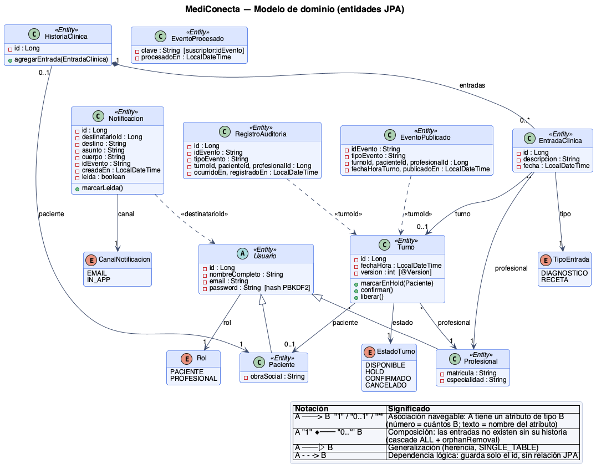
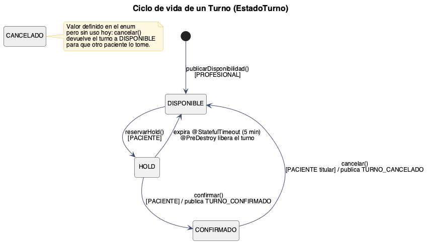
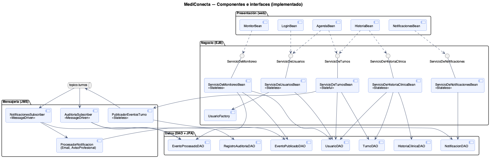
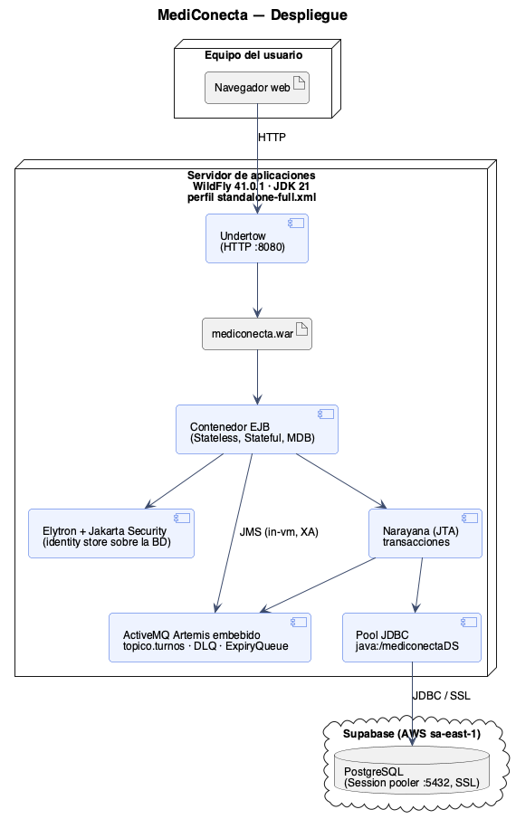
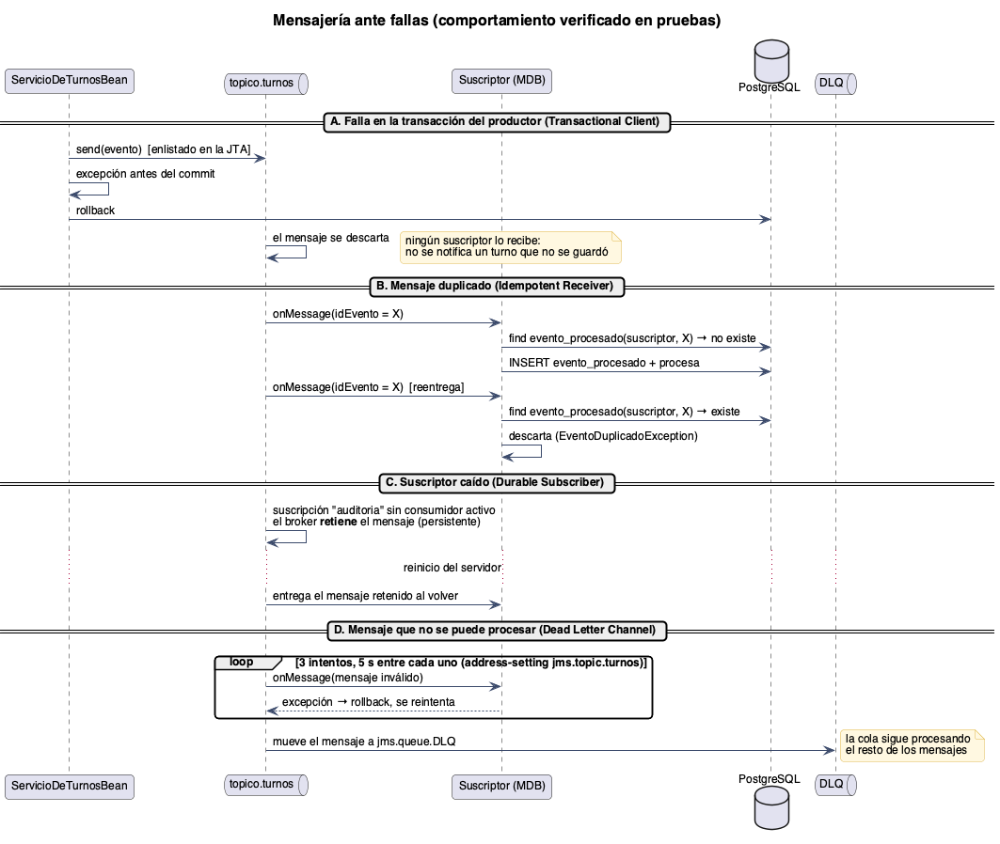
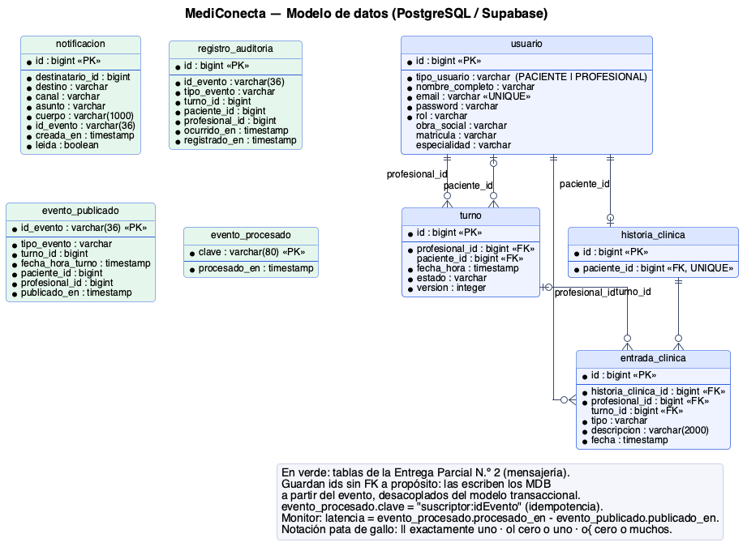
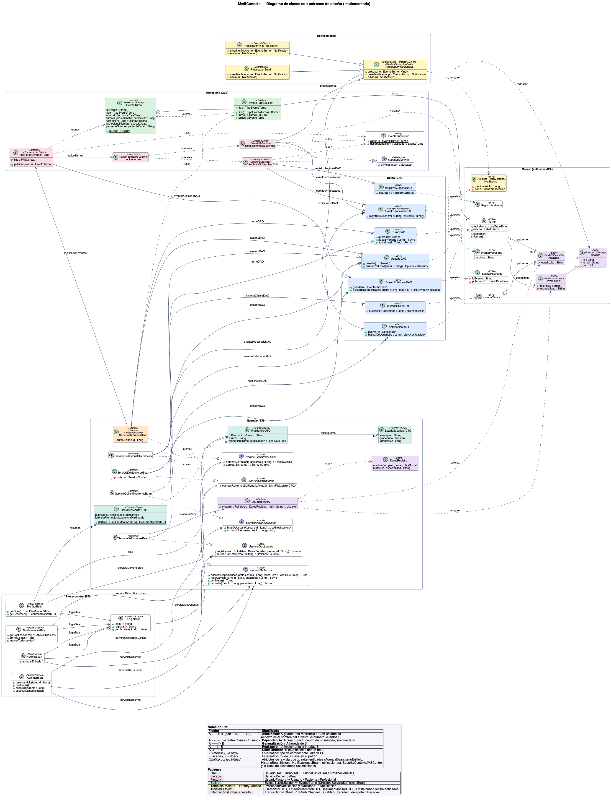

UADE
UNIVERSIDAD ARGENTINA DE LA EMPRESA
Facultad de Ingeniería y Ciencias Exactas
Departamento de Tecnología Informática
Trabajo Práctico: Desarrollo de Aplicaciones II
MediConecta: documento maestro de los diagramas de la solución
Entrega Parcial N.º 2
Grupo 4
Agustín Bodas, Máximo Bonarrico y Sergio Casanova
Universidad Argentina de la Empresa
3.4.218 Desarrollo de Aplicaciones II, Comisión Lunes TT
Prof. Matías Ruiz
19 de octubre de 2026
MediConecta: documento maestro de los diagramas de la solución
MediConecta es la plataforma que venimos construyendo durante el cuatrimestre para conectar a pacientes con profesionales de la salud independientes y con clínicas chicas. Hoy un paciente puede registrarse, buscar a un profesional, reservar un turno, confirmarlo o cancelarlo, y consultar su historia clínica; el profesional, por su parte, publica sus horarios disponibles y carga diagnósticos y recetas. En esta entrega se sumó algo que no se ve a simple vista pero que cambia bastante la arquitectura: cada vez que un turno se confirma o se cancela, el sistema lo avisa por mensajería asincrónica, y otros componentes reaccionan por su cuenta sin que el paciente tenga que esperarlos.
A lo largo del trabajo fuimos acumulando diagramas, y llegó un punto en que cada uno contaba una parte de la historia pero ninguno la contaba entera. Este documento existe para eso: para ordenar los diez diagramas de la solución, explicar qué muestra cada uno y, sobre todo, por qué está ahí. No pretende reemplazar al documento técnico ni repetir el código; la idea es que cualquiera, incluso alguien que no haya estado en las discusiones del grupo, pueda agarrar un diagrama y entender qué decisión hay detrás.
Elegimos escribirlo con un lenguaje más llano que técnico. Cuando un término es inevitable, lo explicamos la primera vez que aparece. Todos los diagramas usan la notación UML 2.5 (Object Management Group [OMG], 2017), salvo el de entidad-relación, que usa la notación clásica de pata de gallo, y el de arquitectura de integración, que es un diagrama de bloques con algunas convenciones propias que aclaramos en su momento.
Cómo leer este documento
No hace falta leerlo de corrido. Lo organizamos en miradas, y cada mirada responde a una pregunta distinta sobre el sistema. Si lo que te interesa es qué puede hacer cada persona, la respuesta está en la mirada del usuario. Si querés entender qué es un turno y por qué pasa por distintos estados, conviene ir directo al dominio. Las preguntas de cómo está organizado el código y dónde corre se responden en la sección de la arquitectura interna. Lo más nuevo de esta entrega, la mensajería, ocupa toda la sección de integración, y los argumentos de diseño (los patrones y por qué los elegimos) quedan para el final, porque se entienden mejor cuando ya se conoce el resto.
Cada figura tiene debajo una nota con el nombre del archivo fuente en el repositorio (carpeta docs/diagramas), así se puede abrir en tamaño completo o editar.
Qué representan los diagramas y qué no
Antes de entrar en cada diagrama conviene aclarar algo que nos preguntamos nosotros mismos: ¿los diagramas representan toda la solución de negocio? La respuesta honesta es que no, y nos parece importante decirlo. Los diagramas muestran con línea llena lo que está construido y funcionando, y con línea punteada lo que ya está diseñado pero se implementa en la próxima entrega. Hay partes del negocio que plantea la consigna (Cátedra de Desarrollo de Aplicaciones II, 2026) que todavía no aparecen en ningún diagrama, porque no las diseñamos con el nivel de detalle suficiente como para dibujarlas sin inventar. La Tabla 1 resume esa situación.
Tabla 1
Cobertura de los diagramas respecto del negocio de MediConecta
| Aspecto del negocio | Estado | Dónde se ve |
|---|
| Registro e inicio de sesión de pacientes y profesionales | Implementado | Figuras 1, 2, 4 y 10 |
| Publicación de disponibilidad, reserva con hold de 5 minutos, confirmación y cancelación | Implementado | Figuras 1, 3, 4 y 7 |
| Historia clínica: diagnósticos y recetas | Implementado | Figuras 1, 2 y 9 |
| Notificaciones y auditoría por mensajería asincrónica | Implementado | Figuras 6, 7, 8 y 10 |
| Monitor de eventos: estado y latencia de cada suscriptor, en vivo | Implementado | Figuras 1, 4, 9 y 10 |
| Validación de cobertura con la obra social (SOAP) y cola de autorizaciones | Diseñado (09/11) | Figuras 1 y 6, en línea punteada |
| Pago de turnos particulares y videoconsulta (REST) | Diseñado (09/11) | Figuras 1 y 6, en línea punteada |
| Facturación a obras sociales | Diseñado (09/11) | Figura 6, en línea punteada |
| Administrador de clínica, reprogramación de turnos, conciliación y reintento de facturas | Pendiente de diseño | No aparece todavía |
Nota. “Diseñado” significa que la integración figura en la arquitectura con su canal y su justificación, pero todavía no tiene código.
Dicho de otra forma: los diagramas representan fielmente lo que hoy existe y el esqueleto de lo que viene, pero no son todavía el mapa completo del negocio. Preferimos un diagrama más chico que se corresponda uno a uno con el código antes que uno más ambicioso que no se pueda defender clase por clase.
La mirada del usuario
Arrancamos por donde arranca cualquier sistema: por la gente que lo usa. El diagrama de casos de uso (Figura 1) no dice nada de cómo está hecho MediConecta; dice qué se puede hacer con él y quién lo hace. Es el diagrama que le mostraríamos a alguien de una clínica que no sabe nada de programación, y por eso es también la base de la documentación funcional.
Figura 1
Casos de uso de MediConecta

Nota. Los casos con borde punteado están planificados para la Entrega Obligatoria N.º 2. Archivo fuente: 07-casos-de-uso.puml.
Hay dos actores principales, el paciente y el profesional, y dos actores secundarios que no son personas sino sistemas externos: la obra social, que es un sistema viejo al que solo se le puede hablar por SOAP, y la pasarela de pago. Que un sistema figure como actor puede sonar raro, pero es justamente lo que UML propone: un actor es cualquier cosa externa que interactúa con el sistema, sea una persona o no.
Lo más interesante del diagrama son las relaciones entre casos de uso. Confirmar un turno incluye haberlo reservado antes (no se puede confirmar algo que no se tiene retenido) y también incluye notificar el cambio, que es el proceso asincrónico de esta entrega. Cancelar también lo incluye. Pagar un turno particular, en cambio, extiende la confirmación: no siempre ocurre, solo cuando el paciente no tiene cobertura. La diferencia entre incluir y extender es una de esas sutilezas de UML que vale la pena tener clara, porque la flecha de extensión va del caso opcional hacia el caso base, y no al revés.
El dominio: qué es un turno y quién lo usa
Si los casos de uso dicen qué se hace, el modelo de dominio dice con qué cosas se hace. La Figura 2 muestra las entidades: las clases que se guardan en la base de datos y que representan los conceptos del negocio.
Figura 2
Modelo de dominio de MediConecta (entidades JPA)

Nota. Los números junto a las flechas indican la multiplicidad (cuántos objetos hay del otro lado). La leyenda del propio diagrama resume la notación. Archivo fuente: 08-clases-modelo.puml.
La pieza central es el Turno. Cada turno pertenece a exactamente un profesional y puede tener, como máximo, un paciente; mientras está disponible no tiene ninguno. Esa diferencia, entre “uno” y “cero o uno”, no es un detalle de dibujo: es una regla del negocio que el diagrama deja a la vista. Usuario es una clase abstracta de la que heredan Paciente y Profesional, porque comparten nombre, email, contraseña y rol, pero cada uno tiene datos propios: la obra social en un caso, la matrícula y la especialidad en el otro.
La historia clínica está unida a sus entradas por un rombo negro, que en UML significa composición. Dicho en criollo, las entradas de una historia clínica no tienen vida propia: si la historia desaparece, sus entradas desaparecen con ella. Es exactamente lo que hace el código, y es la forma correcta de modelar datos de salud, que no deberían quedar sueltos. Las cuatro entidades nuevas de esta entrega (Notificacion, RegistroAuditoria, EventoPublicado y EventoProcesado) se relacionan con el resto con líneas punteadas, porque guardan solo un identificador y no una relación real. Lo explicamos mejor cuando lleguemos a la base de datos.
El turno merece un diagrama aparte, porque es lo único del sistema que cambia de estado a lo largo del tiempo (Figura 3).
Figura 3
Ciclo de vida de un turno

Nota. Entre corchetes figura el rol que puede disparar cada transición. Archivo fuente: 06-estados-turno.puml.
Un turno nace disponible cuando el profesional publica un horario. Cuando un paciente lo reserva pasa a estar en hold, que es una retención temporal de cinco minutos para que nadie más lo tome mientras el paciente decide. Si confirma, queda confirmado; si no hace nada, el turno vuelve solo a estar disponible. Ese “vuelve solo” es lo más lindo del diagrama, porque no lo resuelve un proceso nuestro que revise relojes: lo resuelve el servidor de aplicaciones, que destruye la conversación del paciente cuando vence el plazo y, al hacerlo, libera el turno. Esa es la razón principal por la que el servicio de turnos es un componente stateful, es decir, con memoria de la conversación.
Hay un detalle que dejamos marcado a propósito: el estado “cancelado” existe en el código pero no se usa. Cuando un paciente cancela, el turno no queda cancelado sino que vuelve a estar disponible, para que otro paciente lo pueda aprovechar. Es una decisión de negocio, y nos pareció más honesto dibujarla tal cual que esconderla.
Cómo está armado por dentro
Hasta acá hablamos del qué. Ahora pasamos al cómo, y la primera respuesta la da el diagrama de componentes (Figura 4). Un componente es una pieza de software con una responsabilidad clara que se comunica con las demás a través de una interfaz, un contrato que dice qué operaciones ofrece sin revelar cómo las resuelve.
Figura 4
Componentes de MediConecta y sus interfaces

Nota. Los círculos son las interfaces que ofrece cada componente de negocio; las flechas punteadas indican quién las usa. Archivo fuente: 02-componentes.puml.
Lo que se ve es una arquitectura en capas. Arriba está la presentación, las pantallas que ve el usuario. En el medio, el negocio, con los cuatro servicios: usuarios, turnos, historia clínica y notificaciones. Abajo, los datos, con un objeto de acceso por cada tipo de entidad. A un costado aparece la capa de mensajería, que es la novedad de esta entrega. La regla que respetamos es que cada capa solo conoce a la de abajo: las pantallas nunca tocan la base de datos, y los servicios nunca saben qué pantalla los llamó. Esto, que suena a teoría, en la práctica nos permitió agregar la mensajería sin tocar una sola línea de las pantallas de turnos.
El diagrama de despliegue (Figura 5) responde a otra pregunta: dónde corre cada cosa.
Figura 5
Despliegue de MediConecta

Nota. Archivo fuente: 03-despliegue.puml.
Todo el sistema se despliega como un único archivo dentro de WildFly, un servidor de aplicaciones de Jakarta EE (Eclipse Foundation, 2022). Lo que conviene notar es que WildFly no es solo el lugar donde corre el código: también nos da gratis varias cosas que, de otro modo, tendríamos que programar. Ahí adentro viven el broker de mensajería ActiveMQ Artemis (Apache Software Foundation, s.f.), el gestor de transacciones y el módulo de seguridad. La base de datos, en cambio, está afuera, en Supabase, un PostgreSQL alojado en la nube. Un cambio concreto de esta entrega es que el servidor ahora arranca con el perfil completo de WildFly, porque es el único que incluye el broker.
Cómo se comunica con el mundo
Esta es la sección más importante para la entrega, porque la consigna pide justamente definir la arquitectura de integración y poner en marcha el primer proceso asincrónico. Empezamos por el mapa general (Figura 6).
Figura 6
Arquitectura de integración orientada a servicios

Nota. Línea llena: implementado. Línea punteada: planificado para la Entrega Obligatoria N.º 2. Los nodos con forma de caja tridimensional son sistemas externos. Archivo fuente: 01-integracion-soa.puml.
Lo que hay que mirar en este diagrama son las etiquetas de las flechas, porque cada una dice por qué canal se comunican dos partes. Hay básicamente dos formas de integrar. La sincrónica es como una llamada telefónica: uno pregunta y se queda esperando la respuesta. La asincrónica se parece más a dejar un mensaje: uno lo envía y sigue con lo suyo, y el otro lo procesa cuando puede. Ninguna es mejor en abstracto; cada integración pide una u otra según lo que esté en juego, y la Tabla 2 resume cómo decidimos cada caso.
Tabla 2
Clasificación de las integraciones de MediConecta
| Integración | Canal | Por qué ese canal | Estado |
|---|
| Notificaciones al paciente y al profesional | Asincrónico: tópico turnos | El paciente no tiene por qué esperar a que salga un email para ver confirmado su turno. Si el envío falla, se reintenta sin afectar la reserva. | Implementado |
| Auditoría de cambios en los turnos | Asincrónico: mismo tópico | Es otro interesado en el mismo evento. Con un tópico, sumar un interesado nuevo no obliga a tocar el servicio de turnos. | Implementado |
| Facturación a obras sociales | Asincrónico: tópico con filtro por tipo de evento | Solo le importan las confirmaciones y cancelaciones, y puede procesarlas más tarde, en lote. | Diseñado |
| Autorización de prestaciones | Asincrónico: cola punto a punto | Cada solicitud tiene que procesarse exactamente una vez, y la cola absorbe los picos de principio de mes. | Diseñado |
| Validación de cobertura con la obra social | Sincrónico: SOAP | El sistema de la obra social es legado y solo expone SOAP; además el paciente necesita la respuesta en el momento para saber si paga o no. | Diseñado |
| Pago de turnos particulares | Sincrónico: REST | La pasarela es un servicio moderno y la respuesta (aprobado o rechazado) se necesita antes de confirmar. | Diseñado |
| Videoconsulta | Sincrónico: REST | La sala de video se crea en el momento en que empieza la consulta. | Diseñado |
Nota. Un tópico entrega cada mensaje a todos sus suscriptores; una cola lo entrega a un único consumidor (Hohpe y Woolf, 2003).
Para esta entrega implementamos de punta a punta la integración por tópico. La Figura 7 cuenta, paso a paso, qué pasa desde que el paciente aprieta “Confirmar turno” hasta que aparecen las notificaciones.
Figura 7
Secuencia del proceso asincrónico al confirmar un turno

Nota. El bloque par indica que las dos entregas ocurren en paralelo, cada una en su propio hilo del broker. Archivo fuente: 04-secuencia-confirmar-turno.puml.
El diagrama tiene dos mitades separadas por una línea doble, y esa línea es lo que más importa. En la mitad de arriba, el servicio de turnos confirma el turno y publica el evento en el tópico, todo dentro de una misma transacción. El mensaje, aunque ya se envió, queda en suspenso. Recién cuando el servicio termina y el servidor confirma la transacción (eso es lo que marca la línea doble), el turno se guarda en la base y el mensaje se libera al mismo tiempo. Este patrón se llama Transactional Client (Hohpe y Woolf, 2003) y evita un problema muy concreto: avisarle a un paciente que su turno está confirmado cuando, en realidad, el guardado falló.
En la mitad de abajo pasa lo asincrónico propiamente dicho. El paciente ya recibió su respuesta y no espera a nadie. Mientras tanto, el broker le entrega el mismo evento a dos suscriptores distintos: el de notificaciones, que arma un email para el paciente y un aviso para el profesional, y el de auditoría, que deja registro del cambio. Ninguno de los dos sabe que el otro existe, y el servicio de turnos no conoce a ninguno. Ese desacople es la razón de ser de un tópico.
Un proceso asincrónico que solo funciona cuando todo sale bien no sirve de mucho. Por eso dibujamos también la Figura 8, que muestra qué pasa cuando algo falla. Cada uno de los cuatro escenarios lo probamos contra la base real antes de dibujarlo.
Figura 8
Comportamiento de la mensajería ante fallas

Nota. Archivo fuente: 05-secuencia-fallas.puml.
El primer escenario es la otra cara de lo que vimos recién: si la transacción falla después de publicar, el mensaje se descarta y ningún suscriptor se entera. El segundo resuelve un problema que tienen todos los brokers: en ciertas situaciones pueden entregar el mismo mensaje dos veces. Para que eso no genere dos emails o dos registros, cada suscriptor anota los eventos que ya procesó y descarta los repetidos (el patrón Idempotent Receiver). El tercero muestra la ventaja de que las suscripciones sean durables: si un suscriptor está caído, el broker le guarda los mensajes y se los entrega cuando vuelve, incluso después de un reinicio completo del servidor. El cuarto es el caso del mensaje roto, que no se puede procesar: después de tres intentos el broker lo aparta a una cola de mensajes fallidos, para que no trabe al resto.
Todo esto, que en principio pasa adentro del servidor, decidimos hacerlo visible dentro de la propia aplicación. La pantalla Monitor de eventos muestra, en vivo y para los turnos del usuario que la consulta, cada evento publicado y, por cada suscriptor, si ya lo procesó y cuántos milisegundos tardó, o si lo tiene pendiente. Si se frena un suscriptor desde la consola del servidor, el monitor lo muestra como pendiente; cuando se lo reactiva, el estado cambia solo, y la latencia refleja el tiempo que el broker retuvo el mensaje. Es, en la práctica, el escenario del suscriptor caído de la Figura 8, pero observable sin abrir un log.
Dónde viven los datos
El modelo de dominio que vimos en la Figura 2 es la vista desde el código. El diagrama entidad-relación (Figura 9) es la vista desde la base de datos, y la sacamos directamente de las tablas reales de Supabase.
Figura 9
Modelo de datos en PostgreSQL

Nota. En verde, las tablas incorporadas en esta entrega. Archivo fuente: 09-entidad-relacion.puml.
Lo primero que salta a la vista es que pacientes y profesionales comparten una sola tabla, usuario, con una columna que indica de qué tipo es cada fila. Es la forma en que la herencia del modelo de clases se traduce a una base relacional, y la elegimos porque las consultas de login son más simples con todos los usuarios en el mismo lugar. Las patas de gallo indican cuántas filas de una tabla se corresponden con las de otra: un profesional tiene muchos turnos, un turno tiene un profesional, un paciente puede no tener historia clínica todavía (se crea la primera vez que se consulta) y, si la tiene, es una sola.
Las cuatro tablas verdes son de la mensajería y tienen una particularidad: guardan identificadores de turnos y usuarios pero sin clave foránea, es decir, sin una restricción que las ate a las otras tablas. No es un descuido. Esas tablas las escriben los suscriptores a partir del evento, en otro momento y en otra transacción, y queríamos que la auditoría, por ejemplo, conservara el registro aunque el turno cambiara después. La tabla evento_procesado es la que hace posible descartar duplicados: su clave combina el nombre del suscriptor con el identificador del evento, y la base no permite repetirla. La tabla evento_publicado, por su parte, se escribe en la misma transacción en la que se envía el mensaje, así que cruzándola con la anterior se sabe, para cada evento, qué suscriptor ya lo procesó, cuánto tardó y cuál lo tiene pendiente. De ese cruce se alimenta el Monitor de eventos.
Las decisiones de diseño
Dejamos para el final el diagrama que más trabajo nos llevó, porque es el que junta todo lo anterior. La Figura 10 es un diagrama de clases de todo el sistema donde, además de las clases y sus relaciones, marcamos qué papel cumple cada clase en cada patrón de diseño. Un patrón de diseño es una solución conocida para un problema que aparece una y otra vez (Gamma et al., 1994); lo valioso no es nombrarlo sino poder explicar qué problema nuestro resuelve.
Figura 10
Diagrama de clases de MediConecta con los patrones de diseño aplicados

Nota. Cada color identifica un patrón y los estereotipos entre comillas angulares indican el rol de la clase dentro de él. La leyenda del diagrama explica cada tipo de flecha. Por legibilidad se omiten los atributos de la capa de presentación que guardan entidades. Para leerlo en detalle conviene ampliar el PDF o abrir el archivo 10-clases-patrones.png.
Para leer este diagrama hay que saber distinguir sus flechas, porque cada una dice algo distinto. Una flecha llena con un número (por ejemplo, un 1) significa que una clase guarda una referencia a otra en uno de sus atributos, y el número indica a cuántos objetos apunta. Una flecha punteada con una palabra entre comillas angulares, como «create» o «use», significa que la clase usa o crea a la otra dentro de un método, pero no se la guarda. Las flechas con punta triangular hueca indican herencia si son llenas, e implementación de una interfaz si son punteadas. Con esas cuatro reglas se puede leer el diagrama entero.
Lo más interesante es que los patrones no aparecen aislados sino encadenados, y eso se ve siguiendo los colores. El servicio de turnos (naranja) es una fachada: la pantalla le hace un solo pedido, “confirmar”, y él coordina por detrás a los objetos de acceso a datos (azules) y al publicador de eventos (rosa), todo en una única transacción. A su vez, ese mismo servicio cumple el rol de director en el patrón Builder (verde): es quien arma el evento paso a paso. El evento viaja por el tópico hasta el suscriptor de notificaciones, que delega en los procesadores (amarillos), organizados con un Template Method. Y los procesadores terminan guardando a través de otro objeto de acceso a datos. Un mismo pedido del usuario atraviesa cinco patrones distintos, y cada uno resuelve una parte del problema. La Tabla 3 resume qué resuelve cada uno y qué alternativa descartamos.
Tabla 3
Patrones de diseño implementados, problema que resuelven y alternativa descartada
| Patrón | Qué problema resuelve en MediConecta | Alternativa descartada |
|---|
| DAO (Alur et al., 2003) | La lógica de turnos no debería saber cómo se consulta la base. Cada entidad tiene su objeto de acceso con las consultas parametrizadas. | Usar el gestor de persistencia directamente en los servicios, mezclando negocio con consultas. |
| Facade (Gamma et al., 1994) | Confirmar un turno implica buscarlo, cambiarle el estado, guardarlo y publicar el evento. La fachada lo resuelve en una sola llamada y una sola transacción. | Que la pantalla coordine cada paso, abriendo varias transacciones independientes. |
| Factory | Al registrarse hay que crear un paciente o un profesional según el rol elegido, y el servicio no debería conocer esas clases. | Un if por tipo de usuario dentro del servicio de registro. |
| Builder (Gamma et al., 1994) | El evento tiene once datos y uno es crítico: el identificador, del que depende el descarte de duplicados. El builder lo genera siempre. | Un constructor de once parámetros, fácil de llenar mal. |
| Template Method y Factory Method (Gamma et al., 1994) | Notificar por email o dentro de la aplicación sigue los mismos pasos en el mismo orden; solo cambian el mensaje y el envío. Sumar un canal es agregar una subclase. | Strategy, porque lo que varía no es un algoritmo aislado sino pasos de un proceso con orden fijo. |
| Transfer Object (Alur et al., 2003) | El monitor necesita datos de tres tablas distintas. El servicio arma objetos de transferencia con solo lo que la vista muestra, sin exponer entidades ni datos personales. | Pasarle las entidades JPA a la vista, acoplándola al modelo de datos. |
| Patrones de integración (Hohpe y Woolf, 2003) | Publish-Subscribe Channel, Durable Subscriber, Transactional Client e Idempotent Receiver: entregar el evento a varios interesados sin perderlo, sin duplicarlo y sin publicarlo si el turno no se guardó. | Llamar a los servicios de notificación y auditoría de forma sincrónica desde el servicio de turnos. |
Nota. El documento de diseño del grupo planifica patrones adicionales (State, Strategy, Chain of Responsibility, Adapter, Circuit Breaker, entre otros) para las próximas entregas. No figuran aquí porque todavía no tienen código.
Lo que viene
Las líneas punteadas de los diagramas son, en buena medida, nuestra hoja de ruta para la Entrega Obligatoria N.º 2. Ahí se suma el segundo proceso asincrónico, esta vez con una cola punto a punto para las autorizaciones de prestaciones, y las dos integraciones sincrónicas: el servicio SOAP que simula el sistema legado de la obra social, con su WSDL, y la API REST. También está previsto un flujo transaccional de varios pasos, del tipo reservar, cobrar y confirmar, donde la pregunta central será qué pasa si el cobro falla a mitad de camino. Cuando eso esté listo, varios de estos diagramas se van a actualizar, y el de integración debería quedar casi todo con línea llena.
Conclusiones
Armar este documento nos obligó a algo que no habíamos hecho del todo: mirar los diez diagramas juntos y verificar que contaran la misma historia. En ese proceso encontramos y corregimos errores reales. Una flecha de extensión estaba dibujada al revés. Una secuencia mostraba que el servicio respondía antes de confirmar la transacción, cuando en realidad pasa lo contrario. Y una relación de la base de datos decía “exactamente una” donde el código permite “ninguna”. Ninguno de esos errores rompía el sistema, pero los tres habrían sido difíciles de defender frente a una pregunta precisa.
Si tuviéramos que quedarnos con una idea, sería que cada diagrama responde a una pregunta distinta y ninguno alcanza solo. El de casos de uso no dice nada de la mensajería, y el de secuencia no explica por qué un turno puede quedar en hold. La comprensión del sistema aparece recién cuando se los cruza, y nuestro objetivo fue que ese cruce se pudiera hacer sin necesidad de abrir el código.
Referencias
Alur, D., Crupi, J. y Malks, D. (2003). Core J2EE patterns: Best practices and design strategies (2.ª ed.). Prentice Hall.
Apache Software Foundation. (s.f.). ActiveMQ Artemis documentation. https://activemq.apache.org/components/artemis/documentation/
Cátedra de Desarrollo de Aplicaciones II. (2026). Trabajo práctico integrador: Consigna general y cronograma de entregas [Material de cátedra]. Universidad Argentina de la Empresa.
Eclipse Foundation. (2022). Jakarta EE Platform 10. https://jakarta.ee/specifications/platform/10/
Gamma, E., Helm, R., Johnson, R. y Vlissides, J. (1994). Design patterns: Elements of reusable object-oriented software. Addison-Wesley.
Hohpe, G. y Woolf, B. (2003). Enterprise integration patterns: Designing, building, and deploying messaging solutions. Addison-Wesley.
Object Management Group. (2017). OMG Unified Modeling Language (OMG UML), version 2.5.1. https://www.omg.org/spec/UML/2.5.1/
Apéndice
Declaración de uso de inteligencia artificial generativa
De acuerdo con lo que establece la consigna del trabajo práctico (Cátedra de Desarrollo de Aplicaciones II, 2026), declaramos que en esta entrega usamos Claude, un asistente de inteligencia artificial generativa desarrollado por Anthropic, como herramienta de productividad. Lo usamos para generar el código base de la mensajería (productor, suscriptores, procesadores de notificación y la pantalla de notificaciones), para configurar el broker en WildFly, para automatizar las pruebas de punta a punta, para generar los diagramas a partir del código fuente y para redactar un primer borrador de este documento.
El grupo revisó cada diagrama contra el código y contra la base de datos real, y corrigió las inconsistencias que se describen en las conclusiones. Cada integrante está en condiciones de explicar y defender cualquiera de los diagramas, el código que representan y las decisiones de diseño que se justifican aquí.